The Missing Fleet Manual · Overnight visual production
Part II: visual review
6 of 14 figures are installed in both editions; 8 await installation. See installation progress.
14 candidates, prepared for the final manual-wide review. Fleet is the product, company, or server; host groups are lowercase fleet/fleets. Installed figures are marked below; the other chapter candidates remain pending.
All parts · Full chapter briefs
Default: 720 px
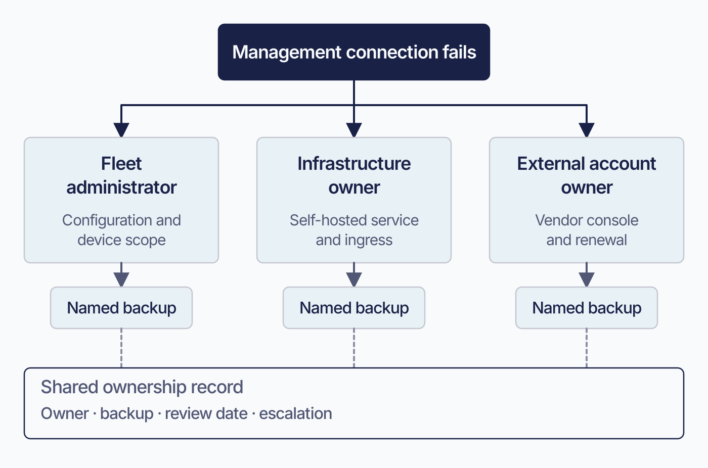
Proposed 2026-09-08; editorial brief, not technical re-verification. Use as an explanation of why the ownership worksheet exists; reduce the repeated named-person advice. Keep the fillable Markdown table and all review cadences. Keep current prose and this TODO until the actual image is reviewed. Then check alt text against the artwork and retain an accessible summary plus all required technical qualifications.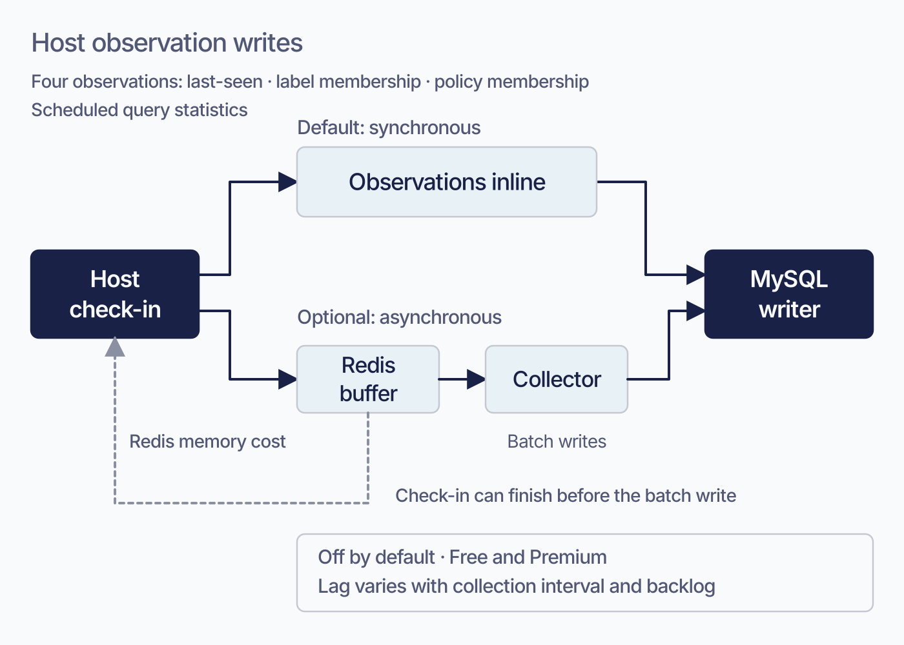
Proposed 2026-09-08; editorial brief, not technical re-verification. Replace the synchronous-versus-buffered write explanation with the diagram and a short tradeoff paragraph. Keep exact toggle/batch defaults, lock and backlog conditions, measurement requirements, and missed failing-policy transition risk. Keep current prose and this TODO until the actual image is reviewed. Then check alt text against the artwork and retain an accessible summary plus all required technical qualifications.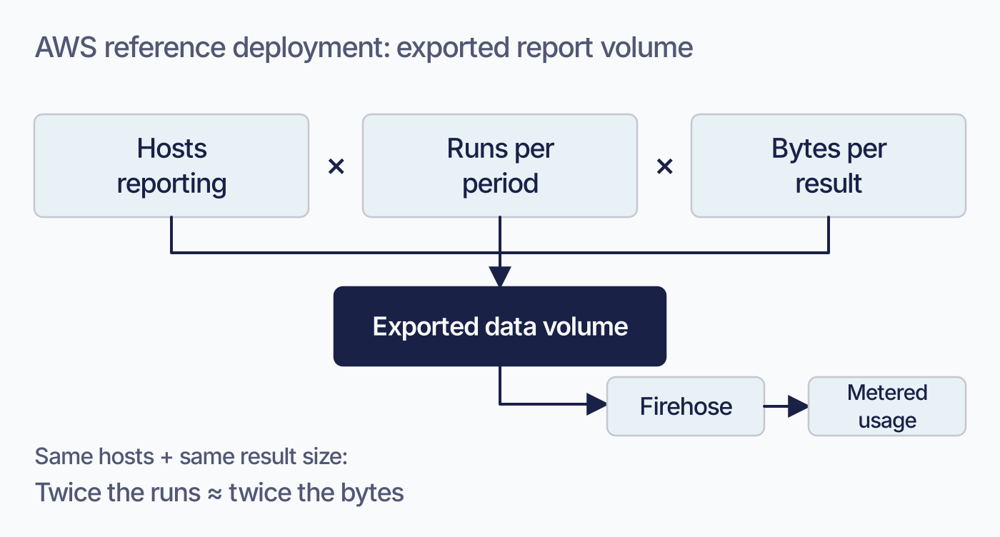
Proposed 2026-09-08; editorial brief, not technical re-verification. Replace the report-frequency cost explanation with one caption and the volume model. Keep the destination-choice link and any billing qualifications in text. Keep current prose and this TODO until the actual image is reviewed. Then check alt text against the artwork and retain an accessible summary plus all required technical qualifications.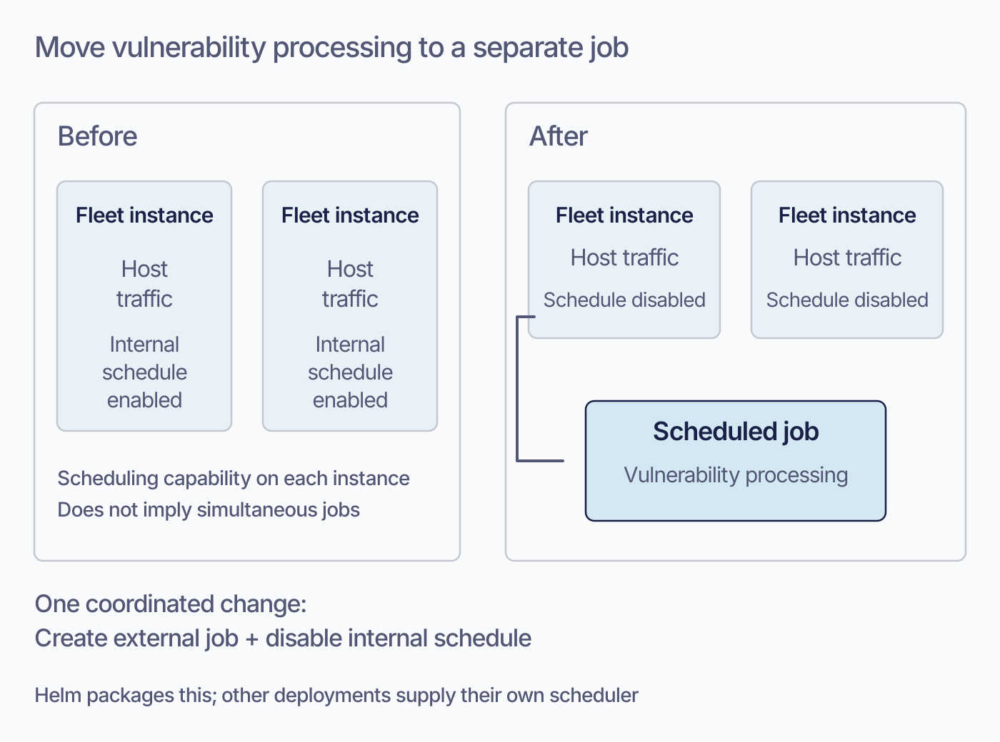
Proposed 2026-09-08; editorial brief, not technical re-verification. Reduce the two-part explanation of moving this work off the serving tier. Keep the operational requirement to disable internal scheduling and the distinction between packaged Helm support and a custom external schedule. Keep current prose and this TODO until the actual image is reviewed. Then check alt text against the artwork and retain an accessible summary plus all required technical qualifications.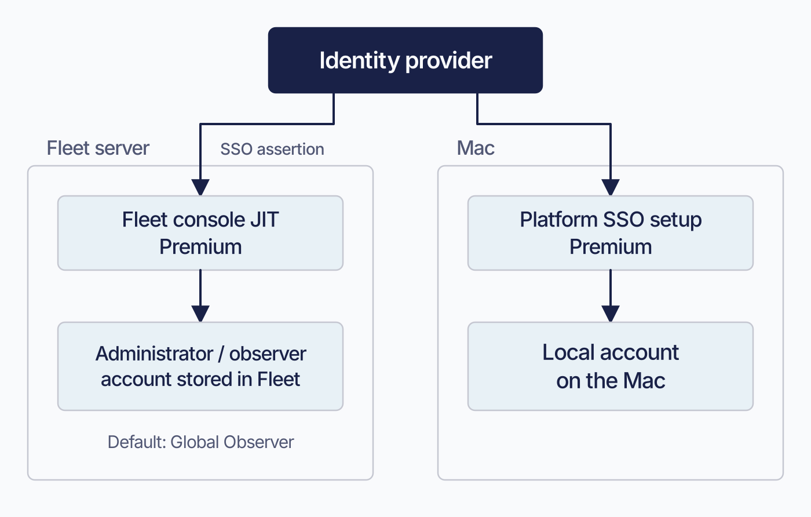
Proposed 2026-09-08; editorial brief, not technical re-verification. Reduce the paragraph separating console provisioning from Mac account provisioning. Preserve the exact IdP attribute names, fallback behavior, and link to the Mac setup chapter. Keep current prose and this TODO until the actual image is reviewed. Then check alt text against the artwork and retain an accessible summary plus all required technical qualifications.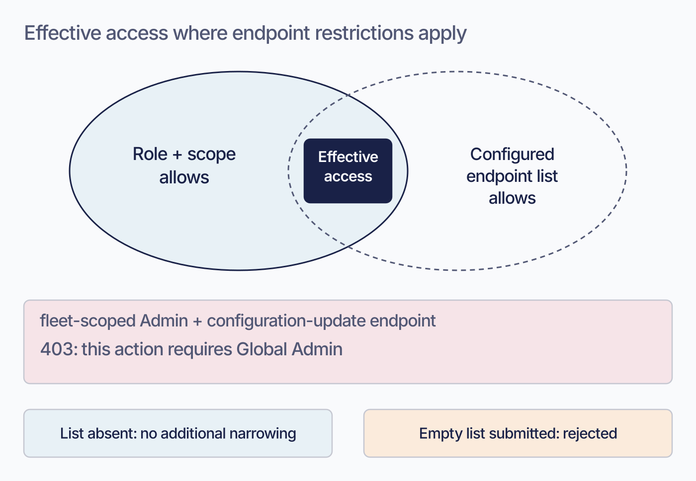
Proposed 2026-09-08; editorial brief, not technical re-verification. Condense the intersection explanation and example. Keep the empty-versus-absent rule and route-coverage limitation explicit in the prose. Keep current prose and this TODO until the actual image is reviewed. Then check alt text against the artwork and retain an accessible summary plus all required technical qualifications.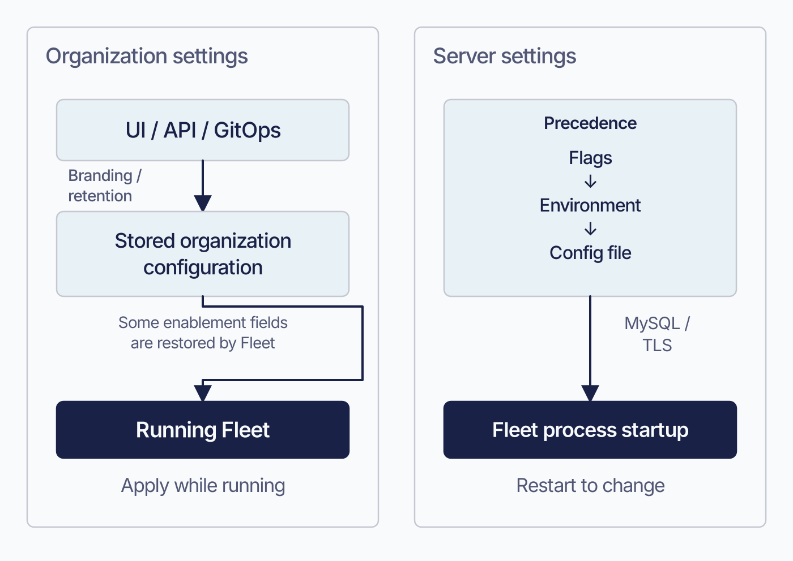
Proposed 2026-09-08; editorial brief, not technical re-verification. Replace the two opening definition paragraphs with a concise comparison and this storage/consumer diagram. Retain the exact four server-owned exceptions and secret-handling advice. Keep current prose and this TODO until the actual image is reviewed. Then check alt text against the artwork and retain an accessible summary plus all required technical qualifications.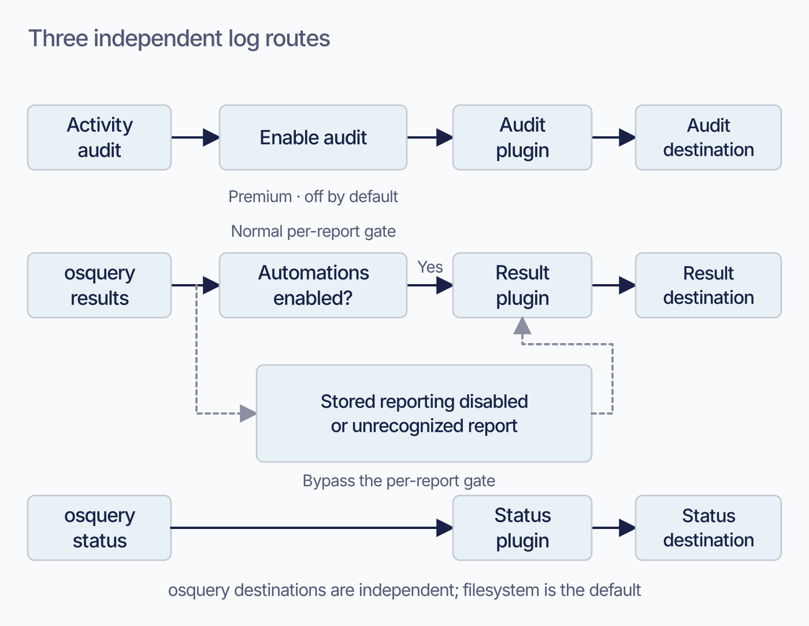
Proposed 2026-09-08; editorial brief, not technical re-verification. Condense the narrative below the stream table, especially the per-report gate explanation. Retain the native setting/default/tier table and complete destination list. Keep current prose and this TODO until the actual image is reviewed. Then check alt text against the artwork and retain an accessible summary plus all required technical qualifications.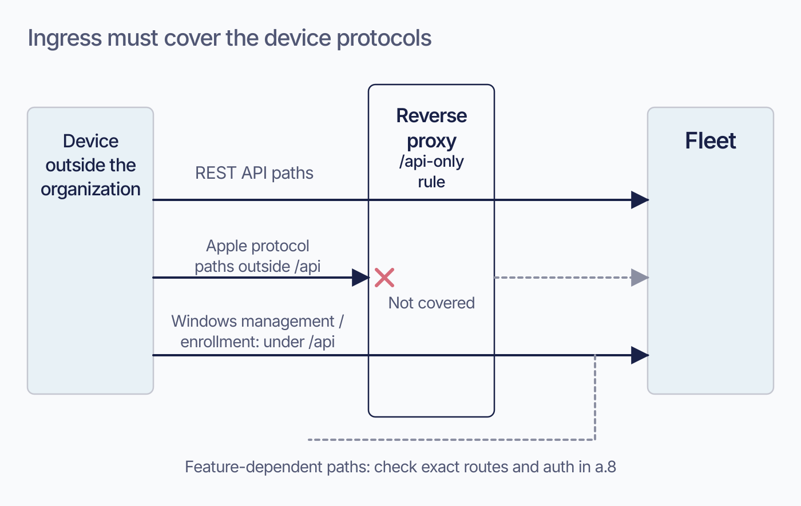
Proposed 2026-09-08; editorial brief, not technical re-verification. Reduce the network-design explanation of incomplete path exposure. Keep the endpoint catalog link, Windows protocol requirements, and optional-feature qualifications. Keep current prose and this TODO until the actual image is reviewed. Then check alt text against the artwork and retain an accessible summary plus all required technical qualifications.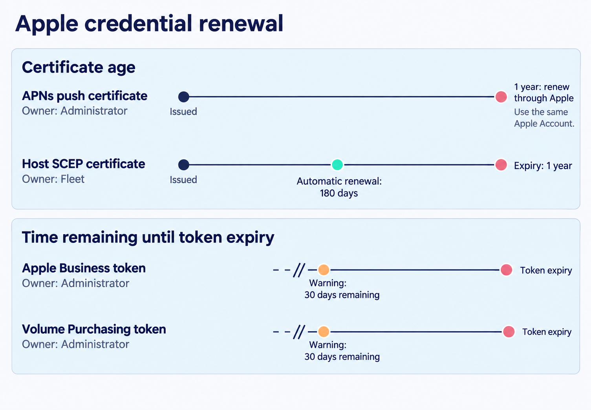
Brief revised 2026-09-08 following visual review. Editorial draft grounded in the current chapter and its existing ledger; this edit is not a new release verification. Before rendering, check every arrow, timing, scope qualifier, and selected transition against the chapter. Resolve any conflict before accepting the artwork. Preserve the current asset until its replacement is reviewed. Update alt text to describe the replacement when installed. Retain editable SVG when available. Change to IMAGE-OK only after rendered-image review.Compare the current book image
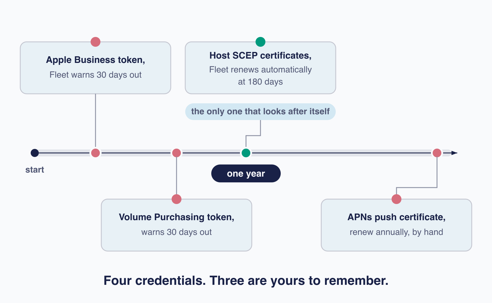
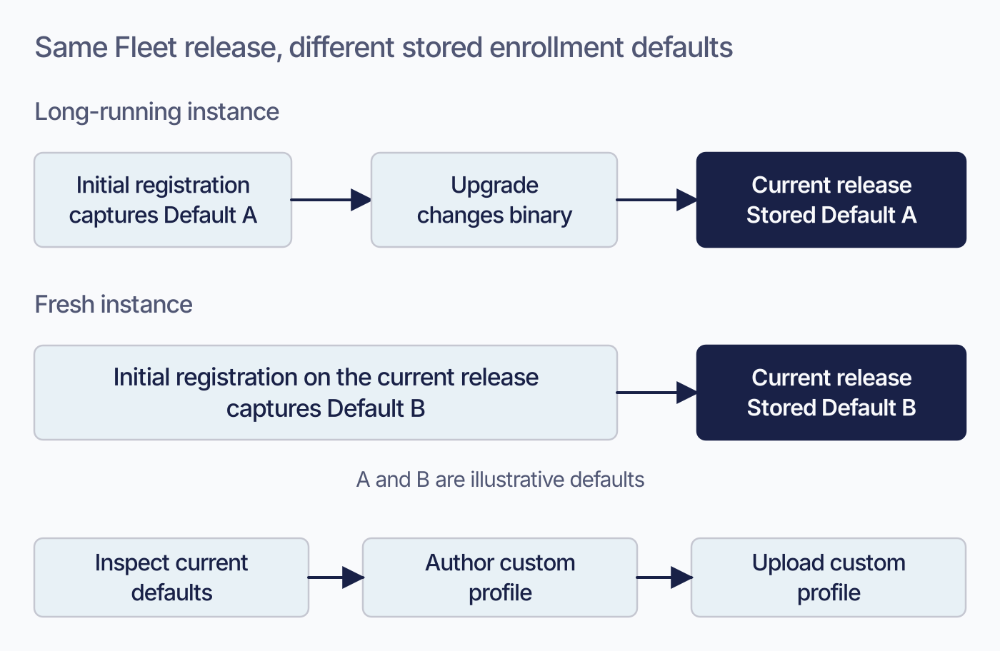
Proposed 2026-09-08; editorial brief, not technical re-verification. Replace the same-version/different-defaults explanation with this persistence example. Retain the download location and the explicit absence of an automatic refresh or reset operation. Keep current prose and this TODO until the actual image is reviewed. Then check alt text against the artwork and retain an accessible summary plus all required technical qualifications.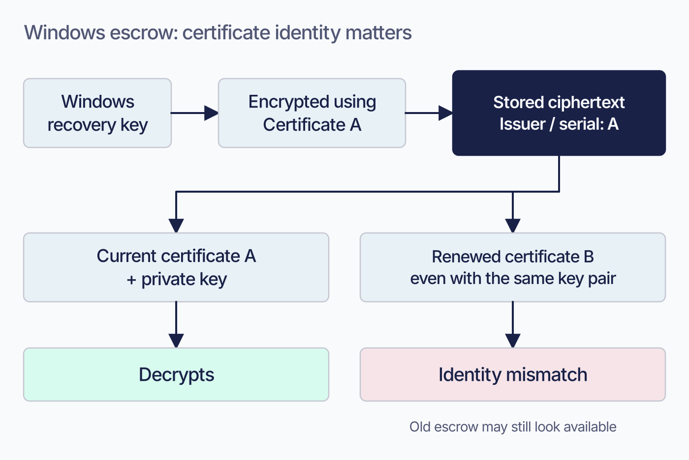
Proposed 2026-09-08; editorial brief, not technical re-verification. Condense the renewal-versus-replacement explanation. Keep preservation requirements, lack of supported mass re-escrow, tested recovery procedure, and platform-specific distinctions. Keep current prose and this TODO until the actual image is reviewed. Then check alt text against the artwork and retain an accessible summary plus all required technical qualifications.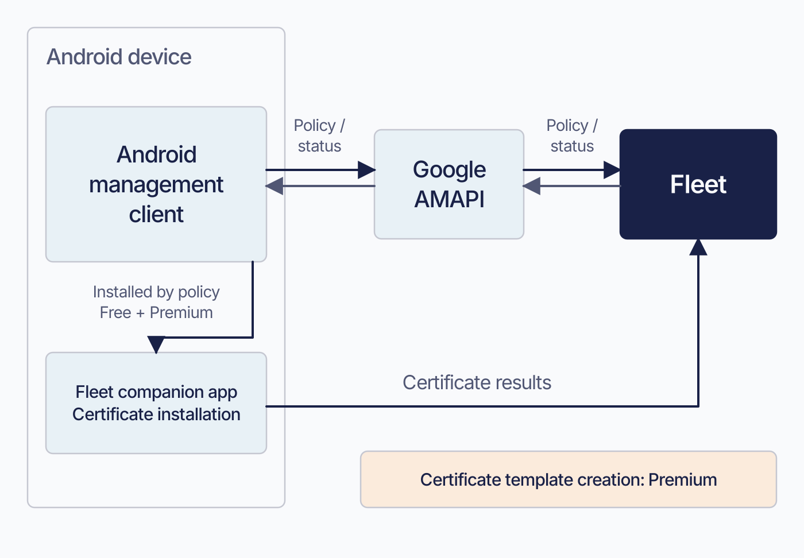
Proposed 2026-09-08; editorial brief, not technical re-verification. Reduce the explanation of the certificate exception to Google's management path. Keep hourly existence reconciliation, app trust/installation settings, and licensing details in text. Keep current prose and this TODO until the actual image is reviewed. Then check alt text against the artwork and retain an accessible summary plus all required technical qualifications.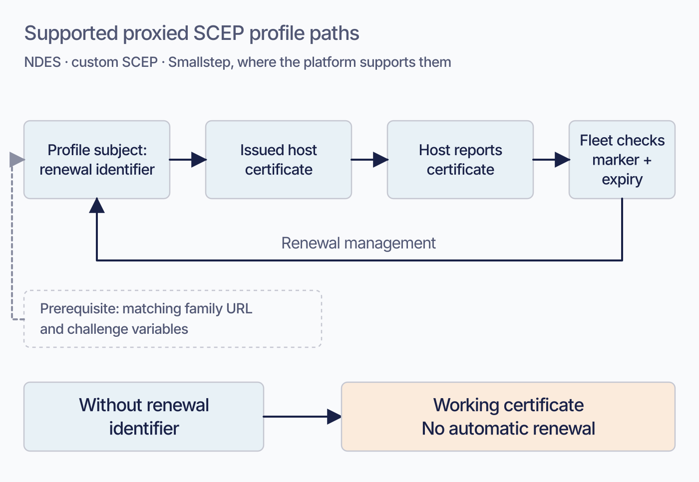
Proposed 2026-09-08; editorial brief, not technical re-verification. Shorten the renewal-identifier paragraph after acceptance. Preserve exact variable spellings, subject placement by platform, supported families, and validation requirements in selectable text. Keep current prose and this TODO until the actual image is reviewed. Then check alt text against the artwork and retain an accessible summary plus all required technical qualifications.